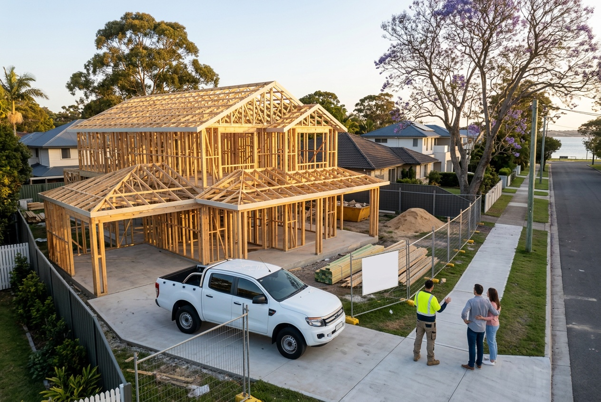

Your questions answered · Dealing with a builder
What questions should we ask a
builder before we sign?
You get one conversation before the contract where every question is free. Here are the fifteen worth asking, in the order they matter, with the rule behind each one so you know what a good answer sounds like. Ask us all of them.
 Nathan Brain, carpenter and builder at Sabre
17 September 2026
5 min read
Nathan Brain, carpenter and builder at Sabre
17 September 2026
5 min read
 Fifteen questionsBefore you sign
Fifteen questionsBefore you signPart of a bigger picture: the whole checklist for choosing a builder in Queensland.
The licence (questions 1–3)
- What's your QBCC licence number, and what class is it? Then look it up yourself on the QBCC's online licence search. How is here.
- Who holds the licence — the company, or a person? And is that person the one running your job?
- Has the licence ever been suspended, or had conditions on it? The register shows history. Ask anyway, and see whether the answer matches.
“Before committing, check the contractor's licence and history via the QBCC Online Licence Search or by calling the QBCC.” If you engage an unlicensed contractor, your work may not be covered under the Queensland Home Warranty Scheme.
Queensland Building and Construction Commission, Consumer Building Guide, version 3, effective July 2023. First item on the regulator's own checklist.
The contract (4–7)
- Is this a fixed price contract, cost-plus, or construction management? The QBCC warns against the second two in plain words. Why is here.
- Which standard contract is it, and can we have a copy to read before we sign? The guide says not to sign before you've received the full contract, plans and specifications.
- What are the allowances and provisional sums, and why is each one there? The guide: keep allowances to a minimum, because the final cost often exceeds the estimate. Ask what proportion of the price they are.
- What happens if we want to change something after signing? The right answer: a written variation, agreed by you before the work starts, stating the change to the price and any delay. That's the law, not a courtesy.
The money (8–10)
- What's the deposit? For a contract of $20,000 or more the maximum before work starts on site is 5%, or up to 20% only where more than half the work is done off site. A builder asking for more is asking for something the law doesn't allow.
- What are the progress payments tied to? The guide says claims must be directly related to work progress on site and proportionate to it — you shouldn't pay 50% until at least half the work is done.
- When is the final payment due, and what's a “defects document”? You're not required to pay the final payment until the work is complete under the contract, with at most minor defects listed in a defects document compiled at the handover inspection.
The time (11–13)
- What's the date for practical completion, and how is it set? The contract must state it, or how it's calculated. The builder must also give you a commencement notice within 10 business days of starting on site, stating the start date and the completion date.
- What can move the completion date? Extensions of time for the reasons the Act allows — delays you cause, variations, more rain than could reasonably be expected — each claimed in writing for you to consider.
- Are there liquidated damages if you're late? The guide says to consider what amount is appropriate and make sure it's recorded in the contract. Many contracts leave it blank.
The people (14–15)
- Who will we be talking to in month four, and how do we reach them? Not the salesperson. The person who'll be on your site and on the end of your phone when the frame is up and a question can't wait.
- Can we speak to a family you built for last year? Not a testimonial page. A phone number, with their permission.
If you ask us, the answer to fourteen is Nathan, and the answer to fifteen is yes.
Common questions
Is it rude to ask about the licence?
No. It's the first thing on the regulator's checklist, and a builder who's proud of their licence will show you the number before you ask. Sabre's is in the footer of every page on this site.
Can we take the contract home before signing?
You should. The QBCC's guide says not to sign before you've received the full contract, plans and specifications, and there's a five-business-day cooling-off period after you receive the signed contract and the guide. Read it at the kitchen table, not at the builder's.
What if the builder won't give us the Consumer Building Guide?
They must, before you sign a contract at or over $20,000. If they haven't, don't sign. It's a two-page document and it's free on the QBCC's website.
Should we get a solicitor to read it?
The guide suggests it if you still have concerns after asking the builder, and says so twice for cost-plus contracts. For a fixed price standard contract, many families read it themselves with the guide beside it. Either is reasonable.
Sources: Queensland Building and Construction Commission, Consumer Building Guide (version 3, effective July 2023) and Deposits and progress payments (reviewed 27 June 2025); Schedule 1B, Queensland Building and Construction Commission Act 1991. Read 17 September 2026. Thresholds and rules change; check the QBCC's current pages. This is a plain-English guide, not legal advice.
Keep reading
 Dealing with a builderThe QBCC check
Dealing with a builderThe QBCC check
What is the QBCC, and what should you check on a builder's licence?
The regulator, the public register and the Home Warranty Scheme, in plain words. How to look any builder up in five minutes — including us.
 The QBCC's own wordsFixed price or cost-plus
The QBCC's own wordsFixed price or cost-plus
Fixed price or cost-plus: what do builders mean, and which protects you?
The two ways a contract can set the price, in the regulator's own words. What each shifts onto you, why the QBCC warns about cost-plus, and what to check before you sign.

Dealing with a builderSmall buildersWho are the small independent builders on Brisbane's Bayside?
What the words actually mean, how to find the builders near Wynnum and Manly who fit them, the checks that work on any of us, and where Sabre sits.
Where most families start
A walk through your house with Nathan.
Print the list and bring it. Nathan would rather answer all fifteen at the table than have you wonder about one of them in month four.
Book your walk-through with Nathan Call 0422 831 306
Already thinking about a rebuild? The free block check is on the same page.